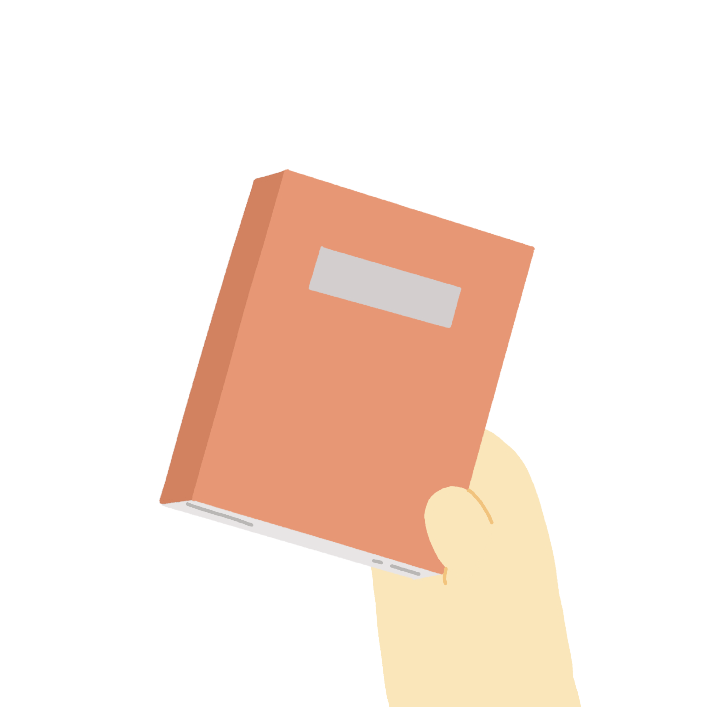

당신의 결과는?!
ESTJ


자기 관리가 철저한 당신!
자기계발서가 어울리겠는데요?
혹시 워커홀릭이라는 소리를 듣고 있진 않나요….?
일적으로 인정받기 좋아하는 당신은 완벽 주의자 성향도 있네요.
목표를 정하면 한 우물만 파는 성격 탓에 친구들이 대단하다며 수군거리고 있을 지도 몰라요.
거기다가 자기 관리가 철저하기까지! 정말 완벽한데요?
하지만 예기치 못한 상황이나 계획에 차질이 생겼을 때 좌절감을 느끼기도 해요.
일에 우선 순위를 정해서 실천해보는 건 어떨까요?
긴급한 것과 중요한 것의 차이를 파악해 일을 한다면 계획이 흐트러져도 괜찮을 거예요!